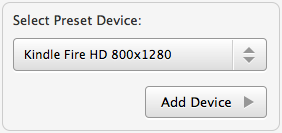

Responsive Resize
Adding Preset Devices
You can add devices to the Devices bar form a preset list.
- Open the 'Devices Panel' by selecting 'Add / Remove Devices…' from the Devices menu or from the Customize menu
 , or use the keyboard shortcut ⌘D.
, or use the keyboard shortcut ⌘D.
- Select a device from the drop-down menu in the 'Select Preset Device:' box.

- Click 'Add Device' to add the device to the Devices bar.
NOTE: As well as adding preset devices you can define your own devices and add then using the 'Create New Device' options.